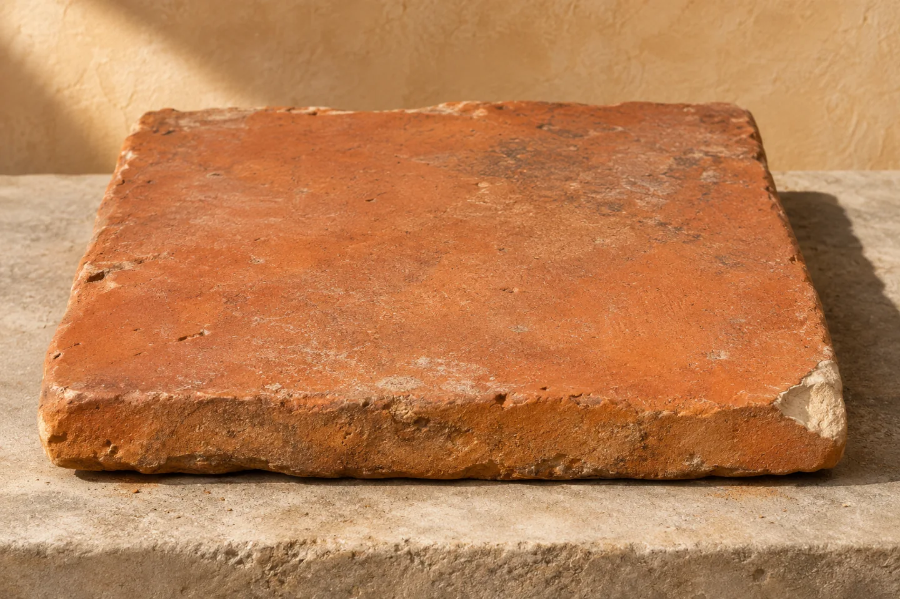

Inspect the lot in three views
Surface shows variation across tiles. Edge exposes chips and thickness. Installed scale shows the tile format in context. The lot dimensions stay in place while the view changes.
Web product / Self-initiated concept
Can you specify reclaimed tile from a photo?
Architects and contractors need to see wear, thickness, and how much of a lot is available before they reserve it.
Inspect the lot

CF–024 · Reclaimed flooring
Salvaged from a courtyard floor. Warm rust and ochre tones, worn faces, and occasional small edge chips.
Demo inventory. No reservation is sent.
Surface shows variation across tiles. Edge exposes chips and thickness. Installed scale shows the tile format in context. The lot dimensions stay in place while the view changes.
The action opens a quantity panel with the available area beside the field. The panel returns you to the same lot when dismissed.
Prototype checks Inspection angles, quantity limits, Escape and focus return, touch and the text fallback with photographs blocked.